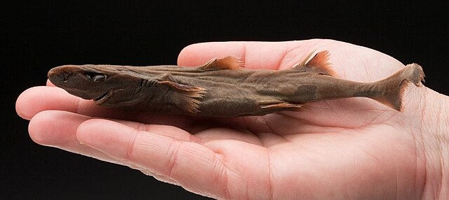
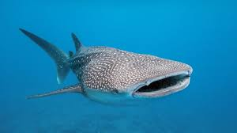

Sharks are a type of fish known for their cartilaginous skeletons, meaning their bones are made of cartilage instead of hard bone. There are over 500 different species of sharks, ranging from the tiny dwarf lantern shark to the massive whale shark. Most sharks have several rows of sharp teeth that are constantly replaced throughout their lives. They are found in oceans all over the world, from shallow coastal areas to deep sea environments.
Sharks have excellent senses, especially their ability to detect electrical signals from other animals using special organs called ampullae of Lorenzini. They breathe through gills and must keep water moving over them to get oxygen. Despite their fierce reputation, most shark species are not dangerous to humans. In fact, many sharks are threatened by overfishing and habitat loss, making conservation efforts important.

Above: Dwarf Lantern Shark

Above: Whale Shark
| Shark | Habitat |
|---|---|
| Great White Shark | Temperate and Subtropical Waters |
| Tiger Shark | Warm, Shallow Brackish Oceans and Freshwater Systems |